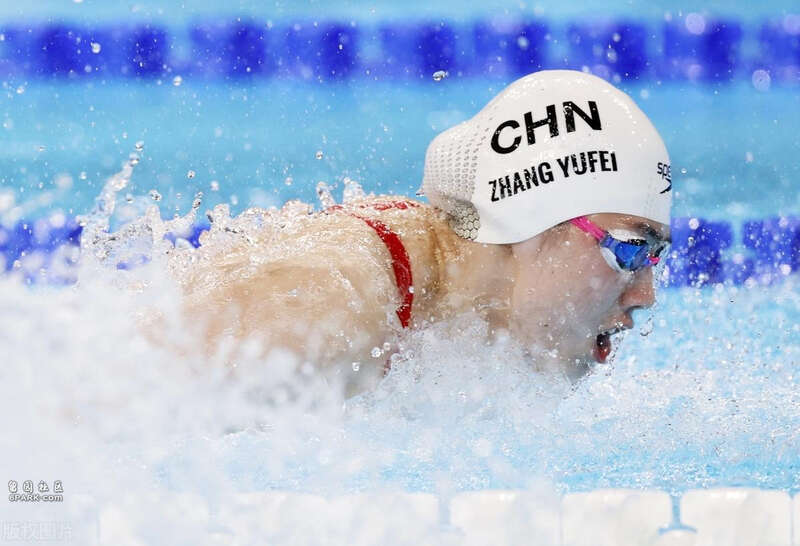
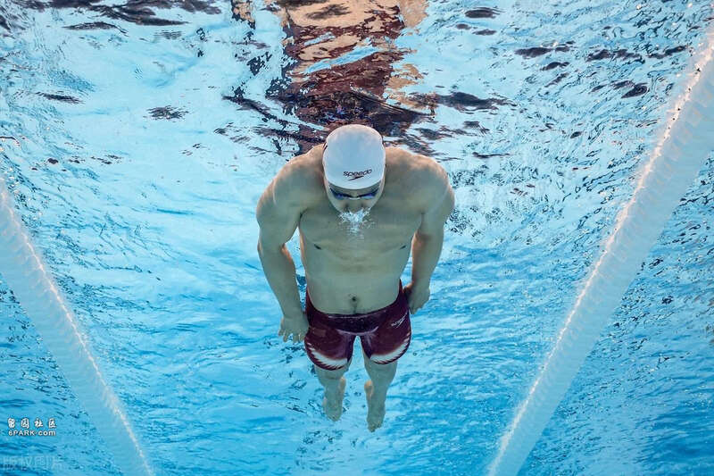
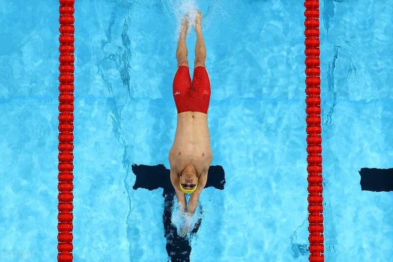

北京时间8月4日凌晨，2024年巴黎奥运会游泳比赛继续在拉德芳斯体育馆进行，在男女混合4×100米混合泳接力决赛中，由徐嘉余、覃海洋、张雨霏、杨浚瑄组成的中国队游出3分37秒55的成绩夺得银牌，打破了原世界纪录，并创造新的亚洲纪录，美国队获得金牌，澳大利亚队获得铜牌。

在三年前的东京奥运会上，中国队获得男女混合4×100米混合泳接力的银牌，当时参赛的张雨霏、徐嘉余和杨浚瑄都参加了本届巴黎奥运会。
在北京时间8月2日下午进行的男女混合4×100米混合泳接力预赛中，中国队派出徐嘉余、唐钱婷、张雨霏、潘展乐组成的阵容，他们以3分42秒26的成绩获得小组第二，并以总排名第三的成绩晋级到决赛。值得一提的是，最后一棒的潘展乐从第七名追到第二名。

今天的决赛，中国队派出的阵容是徐嘉余、覃海洋、张雨霏、杨浚瑄。相比于预赛，状态回升的覃海洋换下了在本届奥运会上拿到金牌的潘展乐，杨浚瑄换下了唐钱婷。决赛中，中国队在第3泳道。
比赛开始，中国队第一棒是仰泳徐嘉余，徐嘉余在50米后排在第一位。交接棒时，中国队稍稍落到第二位，第二棒是蛙泳覃海洋，他和美国队的选手交替领先，并在最后时刻反超美国队。第三棒是蝶泳张雨霏，她在入水后和美国队齐头并进，转身之后稍稍落后美国队。第四棒是自由泳杨浚瑄，她入水后就逆转了对手取得领先，但美国队的胡斯克又追到了第一位。最后50米，杨浚瑄死死咬住胡斯克，以微弱的劣势第二个到边。

最终，美国队获得金牌，成绩为3分37秒43，打破了原世界纪录。中国队的成绩是3分37秒55，同样打破了原世界纪录，并创造了亚洲纪录，获得一枚银牌。澳大利亚队获得铜牌。
Advertisements